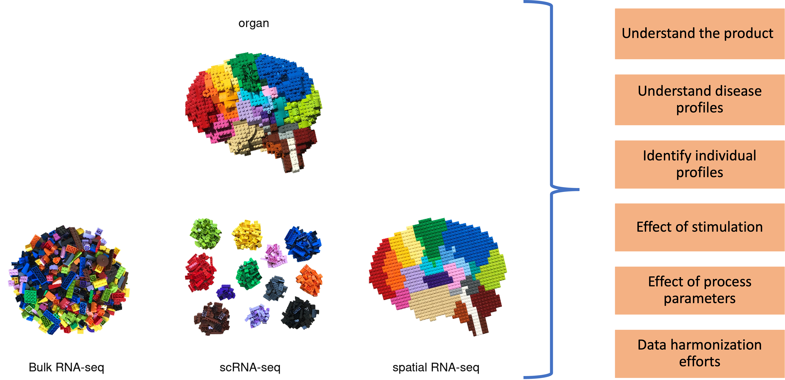

Blog
Explore our latest posts on bioinformatics, data analysis, and more.

Comprehensive Review of Single-Cell RNA-Seq Analysis
A detailed exploration of wet lab practices and computational tools shaping scRNA-seq data, bridging the gap between raw data and actionable insights.
Read More